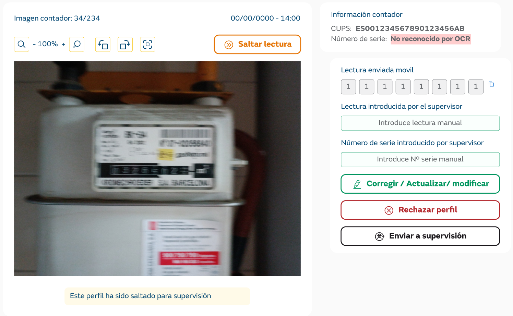

El perfil se crea en la primera lectura enviada por un dispositivo móvil. Además de la información de la lectura, se está validando el número de serie reconocido por el OCR.
Las opciones son equivalentes a las acciones disponibles en la validación de lectura / imagen.
En este caso, no se dispone de lectura de OCR de servidor, puesto que esta no se realiza hasta la creación correcta del perfil.
Del mismo modo que la pantalla de Validación de lecturas, existe la opción de “Enviar a Validación” a los usuarios con perfil validador.
A diferencia de la pantalla de lecturas, el usuario también deberá introducir el número de serie que reconoce en la imagen. En caso de no poder identificarlo, deberá rechazar el perfil.
